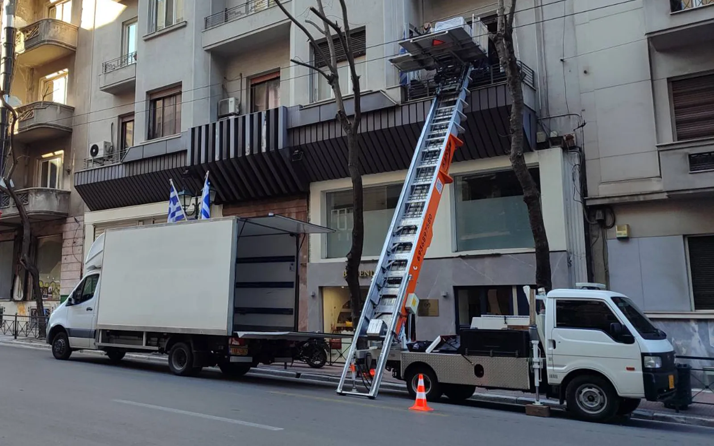

Έπιπλα που δεν χωρούν στη σκάλα. Ένα ψυγείο για μεταφορά. Υλικά για τον όροφο. Πες μας τι και πού. Ελέγχουμε την πρόσβαση και σου δίνουμε προσφορά για την εργασία.
Προεπισκόπηση για έγκριση: οι φωτογραφίες προέρχονται από το δημόσιο προφίλ Ikaros στο Google Maps. Πριν δημοσιευτούν στον τελικό ιστότοπο, χρειάζονται έγκριση χρήσης και τα πρωτότυπα αρχεία από την επιχείρηση.
Χρειάζεσαι κάτι αντίστοιχο;
Στείλε φωτογραφίες του αντικειμένου, του μπαλκονιού και του δρόμου. Θα εξετάσουμε αν μπορεί να γίνει στη δική σου περίπτωση.
Φωτογραφίες εξοπλισμού από το προφίλ Ikaros — δεν τεκμηριώνουν το συγκεκριμένο φορτίο κάθε κάρτας. Η χρήση τους στον τελικό ιστότοπο είναι προς έγκριση.

Ikaros Lift Movers · Ανυψώσεις στην Αθήνα και την Αττική.
IKAROS LIFT MOVERS · ΑΘΗΝΑ & ΑΤΤΙΚΗ
Ανυψωτικό εκεί που η σκάλα δεν αρκεί.
Αναλαμβάνουμε την ανύψωση επίπλων, συσκευών και οικοδομικών υλικών. Πριν προγραμματιστεί η εργασία, εξετάζουμε το φορτίο και την πρόσβαση για να επιλέξουμε την κατάλληλη λύση.
Το αντικείμενο, την περιοχή και τον όροφο. Με μια κλήση ή ένα μήνυμα — δεν χρειάζεται να ξέρεις ποιο μηχάνημα απαιτείται.
02
Εξετάζουμε τη λύση
Ελέγχουμε την πρόσβαση και τι χρειάζεται η εργασία: ανυψωτικό, μεταφορά ή συνδυασμό υπηρεσιών. Αν χρειαστούν φωτογραφίες ή πρόσθετα στοιχεία, σου εξηγούμε ποια.
03
Συμφωνούμε την εργασία και το κόστος
Στην επικοινωνία διευκρινίζουμε τι περιλαμβάνει η προσφορά και τη διαθέσιμη ημερομηνία. Η κράτηση γίνεται μετά τη συνεννόηση με την ομάδα.
Δεν ξέρεις αν χρειάζεσαι ανυψωτικό; Ξεκίνα από αυτό που θέλεις να μεταφέρεις.
Δεν έχεις όλα τα στοιχεία; Κάλεσέ μας στο 693 689 7580 για να ξεκινήσουμε τη συζήτηση.
Πριν κλείσεις την εργασία
Τι πληροφορίες χρειάζονται για την τιμή;
Περιοχή, όροφος, αντικείμενα, πρόσβαση και επιθυμητές εργασίες. Ζήτησε να διευκρινιστεί τι περιλαμβάνει η προσφορά: ανύψωση, μεταφορά, προσωπικό ή συσκευασία. Η τελική τιμή δίνεται μετά τη συνεννόηση με την εταιρεία.
Μπορώ να ζητήσω μεταφορά ενός μόνο αντικειμένου;
Ναι. Αναλαμβάνουμε μεταφορά μεμονωμένων αντικειμένων, όπως ένα έπιπλο ή μια συσκευή. Πες μας τι μεταφέρεις, από πού και προς πού, ώστε να εξετάσουμε και αν χρειάζεται ανυψωτικό.
Μέχρι ποιον όροφο φτάνει το ανυψωτικό;
Το ανυψωτικό διαθέτει δυνατότητα ανύψωσης έως 10 ορόφους. Η καταλληλότητα για το συγκεκριμένο κτίριο και φορτίο χρειάζεται επιβεβαίωση από την ομάδα.
Τι πρέπει να γνωρίζω για τον χώρο στάθμευσης;
Ενημέρωσε την ομάδα για το πλάτος του δρόμου, τη διαθέσιμη πρόσβαση και τυχόν εμπόδια. Πριν κλείσεις την ημερομηνία, διευκρίνισε μαζί της τον απαιτούμενο χώρο και ποιος αναλαμβάνει τυχόν διαδικασίες για τη στάθμευση.
Περιλαμβάνονται μεταφορείς και συσκευασία;
Διευκρίνισε ποιες εργασίες χρειάζεσαι και ζήτησε να αναφέρονται στην προσφορά. Η ανύψωση, η μεταφορά και η συσκευασία μπορεί να αφορούν διαφορετικό εύρος εργασίας.
Τι γίνεται αν ο καιρός δεν επιτρέπει την εργασία;
Συζήτησε εκ των προτέρων με την ομάδα τους όρους αλλαγής ημερομηνίας. Η εκτέλεση της ανύψωσης εξαρτάται από την αξιολόγηση των συνθηκών από τον υπεύθυνο χειριστή.
ΑΣ ΞΕΚΙΝΗΣΟΥΜΕ ΑΠΟ ΤΗ ΔΙΚΗ ΣΟΥ ΕΡΓΑΣΙΑ
Μάθε κόστος & διαθεσιμότητα για τη δική σου μεταφορά.
Κάλεσε την Ikaros και πες μας τι μεταφέρεις, από πού και σε ποιον όροφο. Θα εξετάσουμε την εργασία και θα σου εξηγήσουμε την προσφορά.
Δεν χρειάζεται να έχεις όλες τις απαντήσεις. Ξεκινάμε από αυτό που χρειάζεσαι.